ЧАСТЬ IV
ЗАДАЧНАЯ КОМПОЗИЦИЯ В ДРУГИХ ЕВРОПЕЙСКИХ СТРАНАХ И США
Глава 10
РАСПРОСТРАНЕНИЕ ШАХМАТНОЙ ЗАДАЧИ В ЕВРОПЕ
Задачная композиция в Голландии, Швеции, Дании, Венгрии, Италии, Швейцарии, Финляндии, Испании, Польше
До сих пор мы знакомились с развитием шахматной задачи в основных европейских центрах. Однако задачная композиция не замыкается ими. В большей или меньшей степени, раньше или позже она распространяется уже в XIX веке почти по всей Европе.
Уже в первом международном конкурсе "Эра" наряду с проблемистами Англии, Германии и Австрии принимали участие бельгийские и венгерские композиторы. К концу 70-х годов представительство значительно расширяется. Например, в Нью-Йоркском международном конкурсе 1880 г., проведенном в связи с V Американским шахматным конгрессом, из 53 участников лишь половина была из США, а другая представляла добрым десяток стран, причем, кроме Англии, Германии и Австро-Венгрии*, здесь были участники из Голландии, Швеции, Италии, Греции, Румынии и Канады. А десятилетием-двумя позднее среди призеров конкурсов можно было встретить еще представителей Дании, Испании, Швейцарии, Норвегии, первых успехов добились польские, финские и сербские проблемисты. О России нам предстоит особый разговор.
*Читателям, конечно, известно, что в этом насильственно сколоченном государственном объединении, распавшемся в 1918 году, под властью австрийской монархии находились не только венгерский, но также чешский, словацкий и ряд югославянских народов.
Во всех этих странах понемногу возникает шахматная печать — появляются отделы в общих изданиях и специальные шахматные журналы. Раньше других такой журнал создается в Голландии, затем в Швейцарии, зарождаются журналы в Испании, Дании и других государствах. Не все органы шахматной печати оказываются долговечными, некоторые вскоре прекращаются, другие выходят с перерывами, но так или иначе шахматные журналы получают значительное распространение. Во многих странах выходят книги по шахматной композиции, сборники задач.
Пионером в организации международных конкурсов составления задач в рассматриваемых странах явилась Италия. В приведенном ранее списке первых международных конкурсов упоминался и итальянский конкурс. А к концу века не оставалось ни одной страны из названных выше, в которой не был бы проведен хотя бы один международный конкурс.
Пожалуй, наиболее богатую историю имеет задачная композиция в Голландии. Ее краткое изложение дано в книге М. Нимейера "Антология голландской шахматной задачи за 1792—1933 годы" (41).
Пионером шахматной композиции в Голландии явился Ф. ван Ньевелт (1743—1826 гг.), опубликовавший первую задачу в 1792 г. Он же был автором первых голландских шахматных книг. Период работы предшественников современной композиции продолжается до 1846 г., когда в Голландии начинает выходить шахматный журнал "Сисса", непрерывно издававшийся до 1874 г. Задачный отдел этого журнала пользовался значительным авторитетом, в нем печатались не только голландские проблемисты, но и многие зарубежные мастера задачи.
Из произведений этого периода приведем задачу № 000, содержащую тонкие маневры белого слона.
№ 000
Г. де Бур "Сисса", 1862 г.
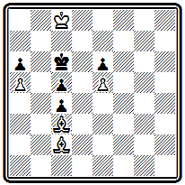
Мат в 6 ходов
Будь в начальном положении ход черных, они получили бы мат в 4 хода. Действительно, на 1... Кр b 5 следует 2. Cd1 Крс 6 3. Ch 5 с матами 3... Кр b 5 4. Се8# или 3... Kpd 5 4. Cf 3#, в случае же 1... Kpd 5 готов ответ 2. Cg 6 и после 2... Крс6 снова 3. С h 5 с теми же матами. Однако белые не имеют выжидательного хода и вынуждены потерять два темпа, чтобы вернуться к исходной позиции, но при ходе черных: 1. Cg6 Kpd5 2. С b1 (или Ch7) 2... Крс 6 3. Сс2, после чего проходит указанная игра. При симметричном расположении фигур несимметричное решение.
Годы 1874—1892 характеризуются отсутствием периодического печатного издания в Голландии. Композиция продолжает совершенствоваться, но авторы публикуют свои произведения преимущественно в зарубежных изданиях. К этому времени относятся первые успехи голландских проблемистов на международных конкурсах.
Композиция № 000 — первая работа голландского автора, получившая в конкурсе высшее отличие.
№ 000
А. Адама "Бритиш чесс мэгезин", 1887 I приз
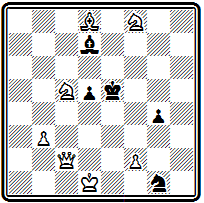
Мат в 3 хода
После хода 1. Ф h 7, которым ферзь перешел через критическое поле d3, грозит 2. Kd3+. При игре короля на d4 и f4 проходят два чистых мата: 1... Kpd 4 2. Ф h 6 Кр:с5 3. Ф b 6# и 1... Kpf 4 2. Kd 3+ Kpf 3 3. Ф h 1#. Остальные варианты таковы: 1... Kpd 6 2. Kd 3; 1... d 4 2. Фе4+; 1... Cf 5 2. Фс7+; 1... С b 5 2. Фе7+; 1... Kf3 2. Kf : d 7+. Задача в английском стиле и удостоена первого приза на большом английском конкурсе.
Оригинальна по конструкции позиция № 000 — в ней нет пешек.
№ 000
Л. де Йонг "Баи фрай", 1890 г. IV приз
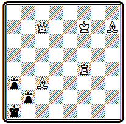
Мат в 3 хода
Тонкое вступление 1. Kpg 7 ставит черных в положение цугцванга. Наиболее интересен вариант 1... Кра2 2. Ф f 7+ с тремя матами при связке ладьи: 2... Кра1 3. Л f 1#, 2... Л bb 3 3. Л f 2 # и 2... Ла b3 3. Ла4 #. Последний мат — правильный. Этот вариант объясняет, почему надо играть королем и только на g7, а не на е7. Белый ферзь должен давать шах на f7, так как при 2. Фс4+ Ла b 3 мата не будет из-за перекрытия ладьи ферзем. Интересны разветвления 1...Ла6(а8) 2. Ф b 6( b 8) с тихими ходами и правильным матом 2... Л:Ф 3. Ла4#. На другие ответы ладьи следует ее взятие ферзем или ладьей.
Двухходовка № 000 составлена в англо-американском стиле.
№ 000
В. Мейнерс " Иллюстрейтид америкэн", 1891 I приз
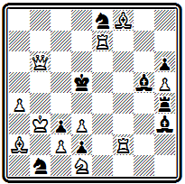
Мат в 2 хода
На ходы черной ладьи получаются 7 различных матов: 1. Ле6 Л g 4 2. Л f 5#; 1... Л f 4 2. Ке3# —с перекрытием; 1... Ле4 2. Л d 6#; 1... Л d 4 2. Фс6# – с блокированием; 1... Лс4 2. dc #; 1... Л b (а)4 2. Кр:Л#. При 1... Cg ( f )4 перекрывается ладья —2. Кр b 4# , а взятие ладьи позволяет использовать блокирование 1... С : е6 2. Фс 5# .
1892 г. открывает новый период, связанный с созданием Голландского шахматного союза и его ежемесячного органа "Тийдскрифт", продолжающего выходить до наших дней. Союз начинает регулярно проводить международные конкурсы составления задач.
В задаче № 000
№ 000
М. Коэйерс "Амстердамер веекблад", 1896 г. I приз
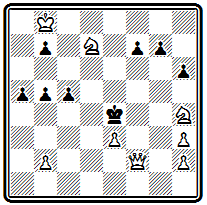
Мат в 4 хода
вступление 1. Kf 5 создает угрозу 2. Фg2+. Если черные защищаются, например, ходами пешек 1... g 5 или 1... h 5, то проходит вторая угроза 2. Kd 6+ Kpd 5 3. Крс7 и мат ферзем с полей f5 или f7. Этот же ход конем решает и при 1... Кр d 3. Парировать обе угрозы можно, играя пешкой "f", —1... f 6, но тогда белые дают правильный мат, используя блокирование поля: 2. Ф d 2 Кр: f5 (иначе 3. Kg 3+) 3. Ф d 5+ Kpg 6 4. Kf 8#. Центральный вариант получается после 1... Kpd 5, на что следует 2. е4+ с тонким продолжением 2... Крс4 3. К:с5 b 4 4. Kd 6# и еще двумя правильными матами при 2... Кр:е4 3. Ф g 2+ Kp : f 5 4. Ф g 4+ или 3... Kpd 3 4. Ke 5 #; 2... Кр e6 3. Ф: c 5.
Композиция № 000, принадлежащая одному из наиболее активных голландских авторов,
№ 000
И. Колпа "Лежер ауэ", 1900 г. I приз
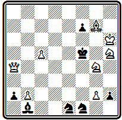
Мат в 3 хода
решается эффектным ходом 1. Cd 4, выключающим белого ферзя и освобождающим черному королю два свободных поля. Интересно разделение ответов слоном при ходах короля на эти поля: 1... Кр: g 4 2. Сс3+ Kpf 5 3. Kg 7# и 1... Кре4 2. Се 3+ г Kpd 3( d 5) 3. Kf 4 #. В первом варианте мат правильный. Еще два правильных мата, образующих между собой эхо, получаются в случае 1... Кре6 2. Kg 7+ Kpd 5 3. Kf 6# и 1... ~ 2. Ф d 7+ Kpe 4 3. Kf 2 #. Вторая угроза 2. Kgf 6.
В середине XIX века зарождается шахматная композиция в Скандинавии, в первую очередь в Швеции и Дании. Первые шаги проблемистов этих стран описаны в вводной статье к сборнику "Северные шахматные задачи годов", составленному совместно шведским композитором А. Ариелем и датчанином С. Серенсеном (42).
Одним из пионеров современной шведской композиции был И. Шульц, начавший составлять задачи в 1857 г. Интересна проблема № 000, относящаяся к первым годам его творчества.
№ 000
И. Шульц "Дейче шахцейтунг", 1860 г.
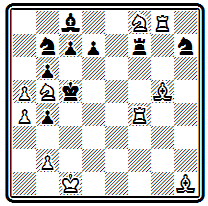
Мат в 5 ходов
Двумя вступительными ходами 1. Ke 6+ de 2. Се7+ Л:е7 белые подготовили осуществление красивого маневра с предоставлением черному королю двух свободных полей 3. Л g 2 b 3 4. Лс2+ bc 5. b 4; ходы черного короля также не спасают; 3... Крс6 4. Л d 2 + или 3... Kpd 5 4. Лg5 # .
Наибольшую известность в этот ранний период приобрели шведские проблемисты А. Арнель и Р. Сальберг.
Задача № 000 завоевала высшее отличие в одном из американских конкурсов.
№ 000
А. Арнель "Детройт фри пресс", 1877 г. I приз
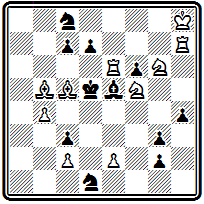
Мат в 4 хода
Первый ход 1. Kpg 8 атакует поле f7 и создает угрозы 2. Л: d 7 + Kd 6 3. Kfe 7+ и 2. Л: h 4 Кр:е 6 (2... ~ 3. е4 + ) 3. Kg 7+. Главный вариант 1... de содержит красивый тихий ход ладьей, становящейся в засаду за две фигуры—2. Л h 5. Грозит 3. е4+; не спасает 2... cf, так как после 3. e 4+ fe следует правильный мат при связанном слоне 4. Kf 4 # .
В Дании наибольших успехов в ту же пору достиг соавтор упомянутого выше сборника С. Серенсен. Он составлял сложные, трудные для решения задачи. Вероятно, именно его задачи имел в виду Лойд, когда писал о чрезвычайной трудности, отражающей суровость северного климата.
О пятиходовой задаче Серенсена из посылки, получившей I приз па конкурсе Британской шахматной ассоциации 1873 г, даже привыкшие к трудным решениям немецкие комментаторы вынуждены были написать "Kolossal schwer"
С. Серенсен Конкурс Британской шахматной ассоциации, 1873 г. I приз
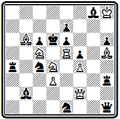
Мат в 5 ходов
1. Ф: b 2, угроза 2. Сс7+ Кр:с7 3. Ф b 7+, 1 ... Л b 4 2. К: f 5 е f 3. Л:е7 Кр:е7 4. Ф f 6+; 1... К: b 2 2. Се8 Ла7 3. Кс:е 6 С:е6 4. Л:е 6+ Не справившись с трудностями устранения побочных решений. Серенсен вынужден был прибегнуть к грубому первому ходу со взятием слона.
Можно предложить такую версию задачи, с лучшим 1-м ходом - версия
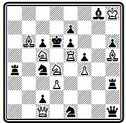
Мат в 5 ходов
1. Ф b 2 и т. д.
Задача № 000 относится еще не к самым трудным.
№ 000
С. Серенсен Конкурс Британской шахматной ассоциации, 1873 г. I приз
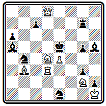
Мат в 4 хода
Первый ход 1. Л f 3 создает угрозу 2. Кс6+, которая проходит и при взятиях ладьи, приводящих к двум вариантам с правильными матами: 1... К: f 3 2. Кс6+ Кр:е4 3. Ф d 5+ К: d 5 4. Cc 2# и 1... С: f 3 2. Кс6+ Кр:е4 3. Фе8+ Ле7 4. Ф g 6#. Больше тонкости и трудности содержится в дополнительных вариантах: 1... Кес2 2. Ф f 6 +(вторая угроза) 2... Кр:е4 3. Ке 6 ; 1... Лg6 2. Kf 5 Кр:е4 3. Ф d 4 +
Любопытен пример № 000, где Серенсен осуществляет так называемую римскую идею задолго до открытия ее Котцем и Коккелькорном.
№ 000
С. Серенсен "Дейче шахцейтунг", 1862 г.
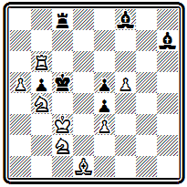
Мат в 3 хода
Нельзя сразу 1. Kd 4 с угрозой 2. К b 3# ввиду 1 ... Cg 8. Необходимо сначала отвлечь тематическую черную фигуру таким образом, чтобы при ее дальнейшей защите от угрозы возникало некоторое ослабление. Поэтому 1. Cf 3, угрожая 2. С:е4 и вынуждая 1... С: f 5 . Теперь, после 2. Kd 4, при прежней защите ходом слона на диагональ а2—g8 он окажется под ударом белого коня— 2... Се 6 3. К:е 6# .
В 1873—1881 гг. в Дании издается журнал "Нордиск шахтиденде", а с 1895 г. выходит на шведском языке "Тидскрифт фор скак".
Работы шведских и датских проблемистов последней четверти XIX века были собраны в двух сборниках: И. Рос "370 избранных шведских шахматных задач" (43) и И. Иесперсен "320 датских шахматных задач периода 1878—1902 годов" (44).
В Швеции в эти десятилетия выдвинулся Ф. Гейерштам. Его сложные содержательные произведения принесли ему много отличий на международных конкурсах. По стилю он приближался к немецкой школе. Задача № 000 содержит главный вариант с двумя вступительными ходами и двухходовым матовым финалом:
№ 000
Ф. Гейерштам Конкурс Западно-Германского шахматного союза, 1877 г. II приз
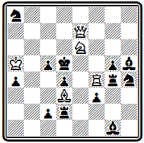
Мат в 4 хода
1. К:с5 Л: d 3 2. Ке4 Л: f 4 3. Ф e 6# и 4. Фе 6# . В зависимости от отступления короля на с4 или е4 получаются два разных правильных мата, объявляемых одним и тем же ходом ферзя. Угроза 2. Фе6+ c последующим 3. С b 5 или 3. Л f 6. На ответ 1... Кс7, защищающий поле е6, проходит другая угроза с тихим вторым ходом 2. К b 7 Л: d 3 3. Фс5 +.
Наиболее известна композиция Гейерштама № 000, завоевавшая I приз в конкурсе Германского шахматного союза.
№ 000
Ф. Гейерштам Конкурс Германского шахматного союза, 1883 г. I приз
Мат в 3 хода
Блестящий первый ход 1. Ф h 8, удаляющий ферзя из игры и ставящий его под удары обеих ладей, приводит к двум симметричным вариантам с правильными матами: 1... Лg: h 8 2. К: g 4 cd 3. Kf 2 # или 2... Ф : d 6 3. Kf 6 # ; 1... Л h : h 8 2. Kd 7 cd 3. Kc5# или 2... Ф: d 6 3. К f6# .
В самом конце века Швеция дала нового большого мастера И. Фридлициуса, расцвет творчества которого относится уже к XX столетию. Он составлял главным образом трехходовки в чешском стиле и достиг в этом направлении значительных успехов. В дальнейшем по его стопам пойдет знаменитый норвежский композитор И. Шель, который станет признанным мастером ортодоксальной чешской школы.
Проблема № 000 выделяется хорошим первым ходом и серией правильных матов, из которых особенно интересны два первых:
№ 000
И. Фридлициус "С.-Пб. цейгунг", 1898 г. I приз
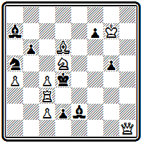
Мат в 3 хода
1. Л f 3 ~ 2. Ф h 4+ gh 3. Л f 4#; 1... C : c 4 2. c 3+ Kp : d 5 3. Л f 6#; 1... К:с4 2. Л d 3+ С: d 3 3. c 3#; 1... С: f 3 2. Фа1+ Кр:с4 3. Ке3#; 1... Кр:с4 2. Л f 4+
В задаче № 000
№ 000
И. Фридлициус Шведский конкурс, 1900 г. I приз
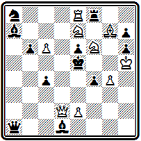
Мат в 3 хода
вступление 1. Kph 4, уводящее белого короля от появляющегося в дальнейшем шаха черной пешкой, подготовляет угрозу 2. Kg 6 +. Содержание задачи образует комплекс трех идейных вариантов с правильными матами: 1... Л:f6 2. Фd5+ еd 3. Kf5# ; 1 ... Кс7 2. Фd6+ Кр:d6 3. Ке4# ; 1... Фd4 2. Kd7+ Kpd6 3. Се5#.
Из датских композиторов, выдвинувшихся в последней четверти XIX века, особо следует отметить И. Иесперсена, добившегося наиболее значительных успехов и продолжавшего активно работать до самой смерти. В 1903 г. он опубликовал свою 2000-ю задачу.
Иесперсен работал в стиле немецкой школы и считался одним из последователей венской группы проблемистов.
Пример № 000 интересен по построению и содержит два идейных варианта с отвлечением черных фигур.
№ 000
И. Иесперсен "Саусерн трейдс газетт". 1883 г . II приз
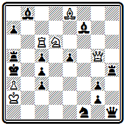
Мат в 3 хода
После 1. Ф h 5 с угрозами 2. Ф d 1+ и 2. Ла6+ черные должны защищаться взятием ферзя. Особенно красив вариант 1... С: h 5, в котором после 2. К b 5 Кр: b 5 используется критически и характер хода слона, позволяющий белым выключить его от батареи: 3. Л g 6#, на 2... Л: b 5 матует 3 . Ла 6#, грозит 3. К:с 3#. При взятии ферзя ладьей используется ее отвлечение от поля е4: 1... Л: h 5 2. Ке4 и 3. К:с 3#. Последний мат — чистый, правильных матов нет.
В дальнейшем Иесперсен совершенствует свою технику и в главных вариантах добивается осуществления правильных матов.
Задача № 000 содержит комбинацию, над которой особенно много работал Прадинья:
№ 000
И. Иесперсен "Манчестер уикли таймс", 1898 г.
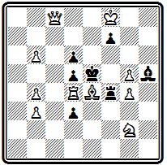
Мат в 3 хода
1. Фа6 Л:е4 2. Фа8 Л: d 4 3. Фе8# или 2... Кр: d 4 3. Фа1#. Белая ладья жертвуется на соседнем с королем поле, и при ее взятиях получаются два правильных мата. Дополнительные варианты: 1... Кр: d 4 2. Ф: d 3+; 1... Кре6 2. Ф b 7; 1... de 2. Фс4; 1... ~ 2. Л: d5 +.
Подъем задачной композиции в Италии относится к концу 70-х годов. Первая попытка выпуска шахматного журнала была предпринята в 1859 г., но вскоре он прекратил существование. С 1875 г. начинает выходить "Нуова ривиста дель скакки", издающийся до 1903 г. Этот орган сыграл значительную роль в развитии задачной композиции в Италии, им, в частности, были организованы первые итальянские конкурсы.
Возглавлял развитие итальянской композиции известный мастер Д. Валле, который уже в 1878 г. опубликовал сборник 100 своих избранных задач (45). В 1891 г. он же выпустил работу по истории и теории композиции "Искусство построения шахматных задач" (46). В этой книге обстоятельно излагаются основные принципы задачной композиции. Автор различает необходимые, обязательные качества задачи, относя к их числу идейность, трудность, единственность ходов, отсутствие неиспользованных сил, возможность позиции и свободные, добровольно вводимые качества, как, например, оригинальность, характер ходов, матовых позиций, экономия, богатство вариантов и т. д.
Отдельная часть посвящена характеристике стилей, сложившихся в задачной композиции.
Из произведений самого Валле мы приведем два, отмеченных высокими отличиями на итальянских конкурсах. В задаче № 000 вступлением
№ 000
Д. Валле "Нуова ривиста дель скакки", 1880 г. II приз
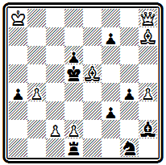
Мат в 3 хода
1. Ф f 8 жертвуется слон и создается угроза 2. Ф: d 6+. Тихий ход следует на взятие слона пешкой: 1... de 2. Cf 5 с правильным матом после 2... Крс6 3. Фс5#. Взятие королем приводит к двум правильным матам: 1... Кр:е5 2. Фе7+ Kpf 4 3. Ф: d 6 # или 2... Kpd 5 3. Фе4#. Четвертый правильный мат получается при взятии слоном 1... С:е5 2. Ф: f 7+ Kpd 4 3. c 3#.
Сложная идея расчистки линий для ферзя представлена в примере № 000.
№ 000
Д. Валле "Нуова ривиста дель скакки", 1893 г. I приз
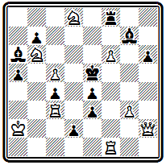
Мат в 4 хода
Вступление 1. Ф h 1 создает угрозу вскрытия позиции короля посредством жертвы ферзя 2. Ф:е4 + Кр:е4 3. Л f 4+ Кре5 4. Л:е 3#. Если 1... d 1 K, защищая поле е3, то используется открытие вертикали "d" и жертвуется ладья: 2. Л f 5 + Кр: f 5 3. Ф h 5 + или 2... Kpd 4 3. Ф: d 1+ Главный вариант получается при 1... Л: f 6; белые, используя блокирование поля f6, могут, пожертвовав уже обе ладьи, расчистить путь для мата ферзем с поля a1: 2. Лd 3 cd 3. Л f 5 + Л: f 5 4. Фа1 # или 3... Кр: f5 4. Ф h 5 #. Оба мата чистые, а первый и экономичный. После 2. Лd3 грозит мат 3. Лd5# , на 2... Л: f 1 проходит другая угроза 3. Ф h 5 +
Основные сведения о развитии композиции в Венгрии можно найти в кратком историческом очерке, помещенном в антологии, изданной в 1939 г. (47). Первый период развития венгерской задачи охватывает 1840—1872 гг. К ведущим проблемистам этого времени принадлежат И. Сен — пионер венгерской композиции, являвшийся также выдающимся мастером и теоретиком шахматной игры, Я. Вес, Я. Сирмай, Д. Пап.
Понграч был одним из победителей Бристольского конкурса 1861 г.
Его задача № 000 из посылки, получившей там III приз, содержит интересную позицию цугцванга в главном варианте.
№ 000
А. Понграч Бристольский конкурс, 1861 г. III приз
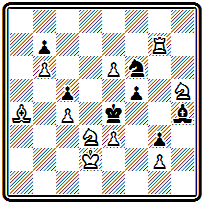
Мат в 3 хода
Ход 1. Се8 создает угрозу 2. Л g 4+ fg 3. Cg 6#. На взятие слона конем 1... К:е8 следует эффектный ход ладьи, перекрывающий слона, - 2. Л g 5, после чего черные оказываются в цугцванге.
В примере № 000 серия тихих ходов приводит к сложной позиции цугцванга:
№ 000
И. Сирмай Парижский конкурс, 1867 г.
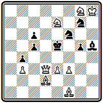
Мат в 5 ходов
1. Кс8 (с угрозой 2. Ф d 6+ Kpf 5 3. Ке7#) 1... Kf 5 2. Kh 6 (грозит мат ферзем на f5) 2... Cg 6 3. Ф d 7, и черные в цугцванге. На взятие ферзя 3... К: d 7 решает 4. Kg 4+ Kpe 6( d 5) 5. Сс4#; другие варианты: 3... с4 4. С:с4; 3... g 4 4. f 4+; 3... К: h 6 4. Ф d 6+ и т. д. Если 1... C : f 3, то 2. Ф d 6 + Kpf 5 3. Ке7+ Кре4 4. К: f 6 # . Но здесь есть простой мат в 4 хода - 1. К:c6+ Крe6 2. Кd8+ Крe5 3. f4+ gf 4. ef# Требуется исправление задачи.
Остроумный маневр белого короля осуществляется в композиции № 000:
№ 000
Д. Пап "Остеррейхише шахцейтунг". 1872 г.
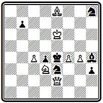
Мат в 4 хода
1. Kpd 7 h 2 2. Крс8 и либо 2... h 1К 3. Кр: b 7 и 4. Сс 6# , либо 2... h1 Ф 3. Cd 7 и 4. С f 5 # .
Ко второму периоду авторы очерка относят годы 1872—1896. Начинают выходить первые венгерские шахматные издания "Будапешти шакксемле" (1889—1895 гг.) и "Мадьяр шаккуйшаг" (1897 г.). На этот период приходится творчество С. Гольда, выпустившего в 1883 г. сборник 200 своих задач (48), Д. Сабо, А. Хуберта, Э. Шустера. Значительных конкурсных успехов добился выдвинувшийся в начале 80-х годов М. Эренштейн.
В примере № 000 последовательной жертвой трех фигур белые добиваются замуровывания коня g4, после чего осуществляют решающий маневр слона:
№ 000
Д. Сабо "Дейче шахцейтунг", 1887 г.
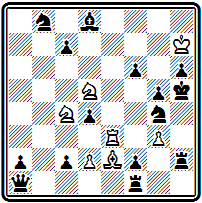
Мат в 5 ходов
1. Ле5 (с угрозой 2. К f 4#) 1... fe 2. Ксе 3 de (2... ~ 3. С: g 4 # ; 2... Л h 4 3. Kf 5 и 4. Kg 7 # ) 3. Kf 6+ С: f 6 4. Сс4 и 5. С f 7 # .
Задача № 000 выделяется хорошим вступлением
№ 000
М. Эренштейн "Мюнхенер нейесте нахрихтен", 1889 г. II приз
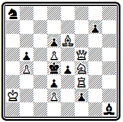
Мат в 3 хода
1. Ф h 7, удаляющим ферзя от поля боя, и красивым главным вариантом с выключением этого ферзя и далеким фронтальным правильным матом: 1... е f (блокируя поле f3, что дальше используют белые) 2. Kg6 ~ 3. Ф h 4 #. В другом разветвлении сначала ферзь возвращается в игру 1... е3 2. Ф: d 3+, а ход конем является матующим: 2... Кре5 3. Kg 6#. Угроза 2. Ф: g 7+.
Задача № 000 содержит три варианта, заканчивающихся правильными матами.
№ 000
М. Эренштейн "Пешти хирлап", 1900г. I приз
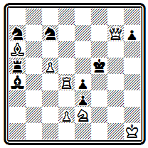
Мат в 3 хода
Хороший первый ход 1. Л d 3, освобождающий поле для коня, создает угрозу, которая при 1... Л:а6 заканчивается правильным матом 2. Kd 4+ Kpf 4 3. de #. На 1... Кре6 следует тот же ответ с другим правильным матом: 2. Kd 4+ Kpd 5 3. Фg5#. Взятие ладьи 1... ed 3 парируется ходом слона 2. С: d 3+ Kpe 6 3. Kf 4#. Дополнительные варианты 1... Kd 5(е6) 2. Лd5+ и 1... Ка b 5(с6) 2. Сс8+.
В последнем случае используется перекрытие черного слона.
Шахматная композиция в Швейцарии в XIX веке развивалась в основном усилиями ее энтузиаста, активного проблемиста Ф. Капрэца. Швейцарские композиторы мало выступали на конкурсах и почти не завоевывали на них отличий. В 1857—1860 гг. выходил журнал "Швейцерише шахцейтунг", который позднее, в 1900 г., был восстановлен как орган национальной шахматной федерации, созданной в 1889 г. Сборник задач швейцарских проблемистов, составленный М. Геннебергером, был выпущен в уайтовской серии в 1921 г. под названием "Альпийские шахматы" (49).
Капрэца относится к раннему периоду развития современной задачи и по кругу идей близко к работам Эрлена, Тертона и других пионеров середины века. Замысел композиции № 000 навеян "индийской задачей" и содержит в главном варианте обходный маневр слона по боковой линии, переходящего за критическое поле d2 с последующим матом на вскрышку:
№ 000
Ф. Капрэц "Лейпцигер иллюстрирте цейтунг", 1855 г.
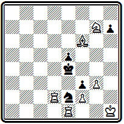
Мат в 5 ходов
1. Се7 h 6 2. Са3 h 5 3. Cc 1 h 4 4. gh Kpf 4 5. Л d 4 #. Дополнительный вариант 1... h 5 2. Cg 5 h 4 3. g 4 h 3 4. Kf 5 и 5. Kd 6 # .
Другой выдающийся швейцарский проблемист И. Юхли был близок по стилю к немецкой школе. В примере № 000 после
№ 000
И. Юхли "Академише монатсхефг". 1891 г.
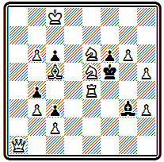
Мат в 3 хода
1. К:с6 черные в цугцванге. Главный вариант 1... Се5 содержит красивый ход ферзем в засаду за белого коня 2. Фа8 и правильный мат со связкой черного слона после 2... Кр:е6 3. Kd 4#. Другие варианты 1... Ch 2 2. Ф f 1+; 1... Кр:е4, Ce1 ( h 4) 2. Ф d1 .
Первые задачи финских композиторов были напечатаны в 1890 г. Тогда же Хельсинкским шахматным клубом, основанным за четыре года до того, был проведен первый конкурс составления задач. Лучшая трехходовка этого конкурса приведена на диаграмме № 000.
№ 000
И. Эквист Конкурс Хельсинского шахматного клуба, 1890 г. Приз
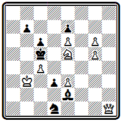
Мат в 3 хода
После 1. Ф h 8 грозит 2. Kd 7+. В вариантах 1... Кр b 6 2. Kd 7+ Kpa 7 3. Фа1 # и 1... Kpd 6 2. К f 7 + Кр:е 6 3. Фс8 # проходят два неплохих правильных мата.
Автор этой задачи И. Эквист был наиболее активным финским композитором конца века. В 1890 г. он предпринимал попытку издания шахматного журнала. По его предложению в русском "Шахматном журнале" в 1893 г. был проведен тематический конкурс на тему взятия на проходе. Значительных успехов финские композиторы добились уже в XX веке. В 1934 г. очередным выпуском уайтовской серии вышел сборник задач финских проблемистов под названием "Суоми" (50).
Отдельные испанские композиторы начали выступать в 60—70-х годах. Первых конкурсных успехов добился А. Абела.
Его задача № 000 содержит любопытный вступительный ход
№ 000
А. Абела "Нуова ревиста дель скакки", 1877 г. III приз
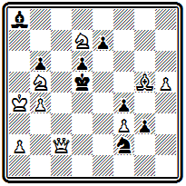
Мат в 3 хода
1. Ch 4, создающий позицию цугцванга, и два варианта с пожертвованием ферзя: 1... Кре6 2. Ф f 5+ Кр: f 5 3. Kd 4# и 1 ... Kd 3 2. Фс4+ Кр:с4 3. К: b 6#. Дополнительные варианты: 1... е6 2. Кр b 3; 1... е5 2. К: b 6+; 1... С b 7 2. Ф b3+
В 1892 г. испанский проблемист и теоретик X. Толоса-и-Каррерас выступил с большим руководством по шахматной композиции (51). Здесь он, в частности, высказывал оригинальные мысли о том, что отдельных школ в задаче уже нет: все они слились в общую эклектическую школу, а существуют два основных течения: англо-американское и немецко-чешское, причем последнее обязательно требует правильного мата. Хотя в ту пору еще рано было говорить о слиянии всех направлений, основная тенденция развития композиции от отдельных школ к двум направлениям,
различающимся отношением к правильности матовых позиций, уловлена правильно. Торжество этой тенденции явилось делом недалекого будущего.
Наиболее выдающимся испанским проблемистом был В. Марин, начавший свой творческий путь в 1895 г. Основной период его работы относится к нынешнему веку, но и в конце прошлого столетия он имел значительные успехи и обнаружил некоторое своеобразие стиля.
Марин наиболее близок к венской группе проблемистов. Однако, работая в этом направлении, он особое внимание уделил одной идее, которая наложила отпечаток на все его творчество.
Задача № 000 — один из его первых конкурсных успехов и ранних примеров разработки излюбленной темы.
№ 000
В. Марин Конкурс Вюрцбургского шахматного клуба, 1895г. I приз
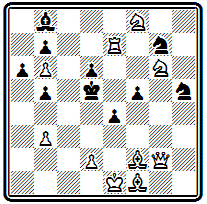
Мат в 3 хода
Эффектное вступление 1. Ф f 3 жертвует ферзя для создания позиции цугцванга и подготавливает вторичную его жертву путем 2. Ф d 3+ на 1... а5, b 4, С~, когда появляется возможность дать мат на уход короля 2... Крс 6. Тонкий ответ осуществляется при игре короля на первом ходу. Белые могли бы уже в начальном положении, играя ладьей, создать угрозу мата конем с е7, но ладье некуда отступать. Нельзя, например, 1. Ле 6, так как после 1... К:е 6 2. Ке7+ король получает выход на е5. Когда же король своим ходом 1... Крс6 сам лишает себя этой возможности, ход ладьей решает: 2. Ле 6 К:е 6 3. Ке7 #. Сильнее кажется в этом варианте 2. Л:е4, но у черных находится единственное опровержение 2... d 5. Главный вариант получается в случае принятия жертвы на первом ходу 1... ef. Белые могут, пользуясь открытием линии "е", играть 2. Ле2, создавая угрозу 3. Ке7# , а на взятие ладьи 2... fe дать правильный мат 3. Cg 2# с использованием вскрытия диагонали g2-d5. Тонкая игра с жертвами фигур для вскрытия важных линий и является коронной темой Марина, в которой он на протяжении своего 40-летнего творческого пути будет находить все новые интересные нюансы.
В композиции № 000 белые фигуры жертвуются для вскрытия четвертой горизонтали.
№ 000
В. Марин Испанский к онкурс, 1897г. I приз
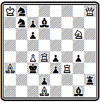
Мат в 3 хода
Оригинальность первого хода 1. Kf 4 в том, что сначала белые сами закрывают нужную им линию, чтобы после 1... gf 2. Kd 3 ed полностью ее расчистить и осуществить мат с выключением черной ладьи 3. Л h4#. Этот мат неправильный, однако в том же главном варианте при ответе 2... Л: h 8 проходит правильный мат 3. С b 2 #. Для характеристики стиля Марина важно отметить, что он обязательно добивался в главной игре по крайней мере одного правильного мата.
История развития задачной композиции в Польше подробно изложена в книге М. Врубеля "Сто лет польской шахматной композиции" (52). Первая задача польского автора была опубликована в 1855 г. Однако только к концу века польская композиция получает достаточное развитие. Появляются шахматные издания, организуются конкурсы составления задач, приходят первые успехи.
Наиболее известными польскими проблемистами конца XIX века были братья Эдуард и Вацлав Потемпские и Освальд Ярошинский (О. Ярош). Проиллюстрируем их творчество, развивавшееся в направлении, близком к чешской школе.
В позиции № 000 три варианта:
№ 000
Э. Потемпский "Курьер варшавски", 1893 г.
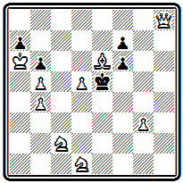
Мат в 3 хода
1. Cf 5 Kp : f 5 2. Ф h 5+ Кре4 3. Kf 2#; 1... Кр: d 5 2. Ф: f 6 Крс4 3. Ф: f 7 # ; 1... Kpd 6 2. Ф b 8 + Кр: d 5 2. Kde 3 #. Все они проходят в результате цугцванга и заканчиваются правильными матами.
В задаче № 000 первый ход
№ 000
В. Потемпский "Тыгодник иллюстрованны", 1897 г. I приз ( исправление )
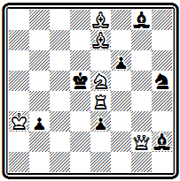
Мат в 3 хода
1. Cf 8 создает угрозу 2. Л:е3+ Кре6 3. Cd 7 #. Защиты конем приводят к двум вариантам с тихими ходами и правильными матами: 1 ... Kg 3 2. К c6 К:е4 3. Ф :g8# и 1... Kf 4 2. Kg 4 К: g 2 3. К: f 6 # .
Наконец, в примере № 000 только два варианта, но в обоих получаются правильные маты двойным шахом:
№ 000
О. Ярош "Тыгодник шаховы", 1899 г.
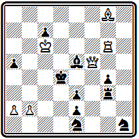
Мат в 3 хода
1. Ch7 ~ 2. Ф f7 Kpd3 3. Л d 6# и 1... Л f 3 2. Фе4+ Кр:е4 3. Л: g 4 # . Задача имеет побочное решение - 1. Лg7! (2. Лd7+ Cd6 3. Фd5#) . Требуется исправление задачи.